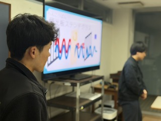
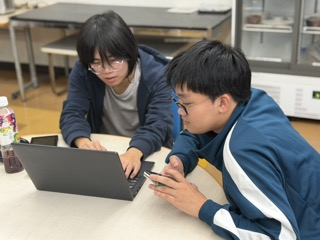
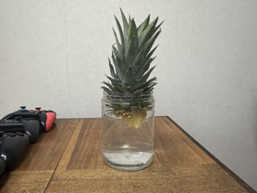

寮祭リハーサル1.5回目を実施いたしました

寮祭に向けたリハーサル1.5回目を実施いたしました。この回は、初回（11月16日）に参加が難しかった寮生を対象に、演目の進行確認や台本読み合わせ、企画の練り上げを重点的に行い、全員で本番像を共有する機会となりました。
寮祭当日は12月7日を予定しています。11月30日の2回目、当日午前の最終リハーサルも控えており、地域の皆さま・OB・寮生に楽しんでいただけるよう準備を進めています。多くの方のご参加をお待ちしております！
🔬 科学実験企画について
毎年恒例となっている科学実験では、今年は「光と色」をテーマにした演示を準備中です。ベンハムのコマによる白黒模様の色知覚現象や、光の分散を扱った実験など、視覚的に楽しみながら理解できる内容を予定しています。
当日は「楽しく、より科学に興味を持ってもらえる」ことを目指し、見やすさと分かりやすさを大切に仕上げていきます。
❓ クイズ大会を新規開催！
今年度は新企画としてクイズ大会を試行しながら進行確認を行いました。問題の難易度や回答ペース、参加方法を調整し、知識問題に偏りすぎず誰でも楽しめる構成を目指しています。

＜番外編＞🍍 パイナップルの栽培開始
市販のパイナップル1玉のヘタを切り取って水耕栽培を始めました。水に浸して根が出るのを待ちながら、青雲寮だよりで経過をお知らせしていきます。
